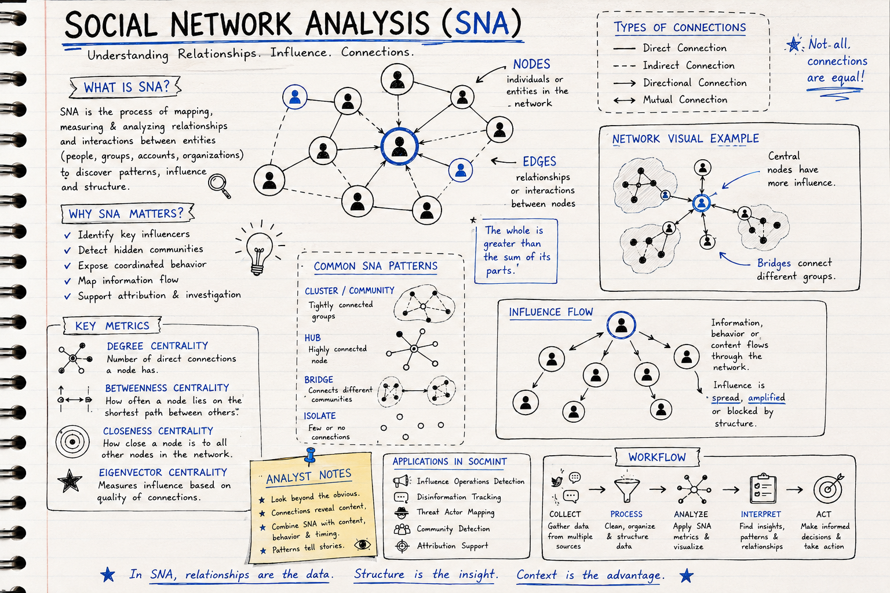
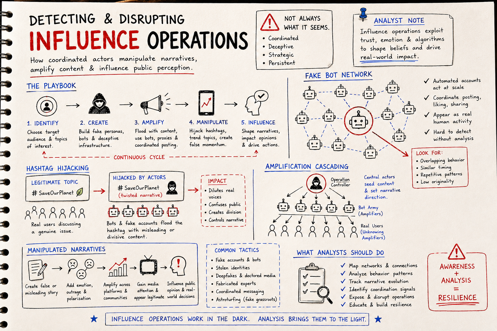

Mastering SOCMINT: Advanced Social Network Analysis & Digital Influence Detection
Classification: TLP:CLEAR • Premium Technical Learning Resource • Subject: Advanced Open Source Intelligence (OSINT) and Social Media Intelligence (SOCMINT)

SOCMINT Overview: Turning social media relationships and network structures into intelligence.
Ready to apply these concepts in a structured mock operation? Explore our full, dual-thread simulated cyber-investigation in OSINT Case File: Operation VIPER-GHOST.
Understanding Advanced Social Network Analysis
Social Network Analysis (SNA) forms the backbone of professional SOCMINT operations, providing the mathematical framework for understanding complex social relationships and information flows. Professional analysts use multiple measures to understand different types of influence and network roles.

Social Network Analysis: Mapping nodes, edges, centralities, and influence flow structures.
When analyzing high-threat actors, focus on Betweenness Centrality rather than mere degree count. Bridges connecting disparate sub-networks are highly critical points of vulnerability and control in covert influence channels.
Mastering Attribution Techniques
Professional attribution relies on sophisticated analytical techniques:
- Lexical analysis examines vocabulary richness, word frequency, and unique word choices
- Syntactic patterns look at sentence structure, grammatical constructions, and writing style
- Stylistic markers identify punctuation usage, capitalization patterns, and formatting preferences
- Temporal consistency tracks writing patterns over time and under different conditions
Behavioral Analysis and Psychological Profiling
Advanced SOCMINT incorporates behavioral science principles to understand the motivations, intentions, and psychological characteristics of online actors.
Professional behavioral analysis examines:
- Content analysis looks at topics, sentiment, and narrative themes
- Interaction patterns study engagement styles and response patterns
- Temporal behavior examines activity patterns and response times
- Network position analysis looks at role within social networks and influence patterns
Detecting Influence Operations

Influence Operations Playbook: Understanding creation, amplification, manipulation, and countermeasures.
Coordinated influence operations employ advanced techniques to manipulate public opinion and spread disinformation. Professional detection requires identifying artificial amplification patterns and coordinated behavior.
Common influence operation techniques include:
- Hashtag hijacking to spread alternative narratives
- Amplification cascades creating artificial virality
- False flag operations using fake accounts to impersonate opposing viewpoints
- Content farming with mass production designed to manipulate algorithms
- Emotional manipulation using divisive content
Data Collection and Preservation Methods
Professional SOCMINT operations require sophisticated data collection methodologies that balance comprehensiveness with legal and ethical considerations.
Advanced API Utilization Techniques
- Multi-platform integration coordinating data collection across multiple social media APIs
- Rate limiting management optimizing collection speed while respecting platform limitations
- Authentication security for handling API keys and authentication tokens
- Error handling for API failures and data inconsistencies
Cross-Platform Identity Correlation
Advanced SOCMINT operations often require correlating identities across multiple platforms to build comprehensive profiles and establish attribution with higher confidence.
Systematic Approaches to Cross-Platform Analysis
- Username pattern analysis identifies consistent naming conventions across platforms
- Email address correlation finds accounts registered with the same email addresses
- Profile image analysis uses reverse image search to find identical or similar profile pictures
- Content cross-referencing identifies shared content, links, or references across platforms
- Temporal correlation analyzes posting patterns and activity rhythms
Always verify matches through independent selectors. Naming pattern matches can trigger massive false attribution traps if the target is practicing active identity spoofing or name-mirroring.
Temporal Analysis and Pattern Recognition
Professional temporal analysis techniques:
- Activity heat maps visualizing posting patterns across days of the week and hours of the day
- Timezone analysis determining geographic location based on posting times
- Response time analysis measuring interaction patterns and communication rhythms
- Event correlation linking online activity to real-world events
Legal and Ethical Frameworks
Advanced SOCMINT operations must be conducted within strict ethical and legal frameworks to ensure legitimacy, protect individual rights, and maintain professional standards.
Legal Frameworks Governing SOCMINT Operations
- Fourth Amendment protections understanding privacy expectations in digital spaces
- Computer Fraud and Abuse Act avoiding unauthorized access to systems
- Stored Communications Act understanding access to stored electronic communications
- Platform terms of service complying with platform-specific rules and restrictions
Professional Ethical Standards for SOCMINT Practitioners
- Proportionality ensuring investigative methods are appropriate to the threat or concern
- Necessity only collecting information that is essential to the investigation
- Transparency documenting methods and sources for accountability
- Minimization limiting collection to relevant information and timeframes
Professional Tools and Resources
Industry-standard tools for advanced SOCMINT:
- Maltego comprehensive link analysis and data visualization
- Palantir Foundry enterprise-scale data integration and analysis
- Recorded Future threat intelligence platform with social media analysis
- Brandwatch social media monitoring and analytics for large-scale analysis
Open Source and Custom Solutions
- Python libraries NetworkX, Pandas, Scikit-learn for custom analysis
- Gephi open-source network visualization and analysis
- ELK Stack Elasticsearch, Logstash, and Kibana for large-scale data analysis
- Custom scripts Python, R, or JavaScript for specialized analysis needs
FAQ Section
What is Social Media Intelligence (SOCMINT)?
Social media intelligence involves gathering, analyzing, and attributing social media information using methodologies employed by intelligence agencies and specialized research teams.
How do I identify influence operations on social media?
Professional analysts employ network topology analysis to understand complex social relationships and information flows. No single measure tells the complete story.
What are the key indicators of coordinated influence operations rather than organic social media activity?
Accounts with identical posting times and similar content most strongly indicate a coordinated influence operation rather than organic social media activity.
What legal considerations apply to SOCMINT operations?
Operations must be conducted within strict ethical and legal frameworks to ensure legitimacy, protect individual rights, and maintain professional standards.
How do I ensure my SOCMINT practices are ethical?
Professional practices require:
- Proportionality ensuring investigative methods are appropriate to the threat
- Necessity only collecting information that is essential to the investigation
- Minimization limiting collection to relevant information and timeframes
Conclusion
Mastering advanced SOCMINT requires not only technical skills but also critical thinking, pattern recognition, and the ability to communicate complex findings to diverse audiences. The techniques learned in this field provide a foundation for advanced practice, but true expertise comes from experience, continuous learning, and engagement with the broader professional community.
The field of SOCMINT evolves rapidly with platform changes, new analytical techniques, and emerging threats. Commitment to ongoing professional development through training, conferences, and community engagement ensures that the techniques learned in this field provide a foundation for advanced practice.
Disclaimer
This article is intended strictly for educational, research, cybersecurity awareness, and professional intelligence analysis purposes only.
The methodologies, workflows, and tools discussed are designed to support legitimate Open Source Intelligence (OSINT) and Social Media Intelligence (SOCMINT) practices conducted within applicable legal, ethical, and organizational boundaries.
Readers are responsible for ensuring compliance with:
- Local and international laws
- Platform Terms of Service
- Privacy and data protection regulations
- Organizational security policies
- Ethical investigation standards
The author does not encourage or endorse:
- Unauthorized access
- Privacy violations
- Harassment or stalking
- Illegal surveillance
- Malicious cyber activity
- Disinformation campaigns
- Abuse of intelligence techniques
Always practice:
- Proportionality
- Necessity
- Transparency
- Responsible disclosure
- Ethical intelligence collection
All trademarks, product names, and platforms mentioned belong to their respective owners.
Resources & Official Links
Professional / Enterprise Tools
Open Source / Technical Tools
Additional Learning Resources
OSINT & SOCMINT Learning
Data Visualization & Analysis
Author Note
Technology, influence operations, and digital intelligence ecosystems evolve rapidly. Continuous learning, ethical discipline, and analytical rigor are essential for anyone operating in the SOCMINT and OSINT domains.